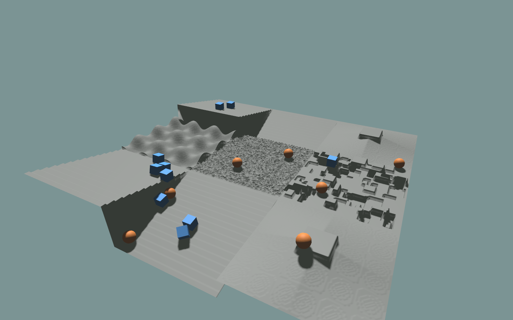

Procedural Terrain and Collision¶
KangEngine can generate tiled height-field terrain in Python, render it as one continuous mesh, and use the same height samples for PhysX collision.
The complete example mixes stairs, slopes, waves, random ground, and discrete obstacles:
python ./python/examples/view_procedural_terrain.py
It also drops dynamic spheres and boxes onto the terrain to verify that the
rendered surface and PhysX heightfield agree. Press R to reset the bodies.
Complete source: view_procedural_terrain.py
1"""Generate a procedural terrain height field in Python and render it as mesh."""
2
3from __future__ import annotations
4
5import argparse
6
7import numpy as np
8
9import kangengine as ke
10from kangengine import imgui, keys, terrain
11
12
13TERRAIN_TYPES = ("stairs", "slope", "pyramid", "wave", "random", "obstacles")
14
15
16class ProceduralTerrainViewer(ke.App):
17 def __init__(
18 self,
19 *,
20 terrain_type: str = "mixed",
21 rows: int = 3,
22 cols: int = 3,
23 tile_width: int = 96,
24 tile_length: int = 96,
25 horizontal_scale: float = 0.05,
26 vertical_scale: float = 0.005,
27 backend: str = "cpp",
28 seed: int = 7,
29 collision_test: bool = True,
30 test_bodies_per_type: int = 10,
31 ):
32 super().__init__()
33 self.terrain_type = terrain_type
34 self.rows = int(rows)
35 self.cols = int(cols)
36 self.tile_width = int(tile_width)
37 self.tile_length = int(tile_length)
38 self.horizontal_scale = float(horizontal_scale)
39 self.vertical_scale = float(vertical_scale)
40 self.backend = backend
41 self.seed = int(seed)
42 self.collision_test = bool(collision_test)
43 self.test_bodies_per_type = int(test_bodies_per_type)
44
45 def setup(self):
46 self.standard_materials = self.create_standard_materials()
47 self.set_light_direction(ke.Vec3(-0.35, 0.82, -0.45))
48 self.set_light_intensity(1.25)
49 self.set_light_ambient(ke.Vec3(0.32, 0.32, 0.32))
50
51 self.rng = np.random.default_rng(self.seed)
52 self.grid = terrain.TerrainGrid(
53 self.rows,
54 self.cols,
55 self.tile_width,
56 self.tile_length,
57 horizontal_scale=self.horizontal_scale,
58 vertical_scale=self.vertical_scale,
59 )
60 self.grid.fill(self._generate_tile)
61 self.mesh = self.grid.to_mesh(up_axis=ke.UpAxis.Y, backend=self.backend)
62
63 self.material = self.create_phong_material(
64 ambient=ke.Vec3(0.10, 0.12, 0.10),
65 diffuse=ke.Vec3(0.27, 0.28, 0.27),
66 specular=ke.Vec3(0.06, 0.06, 0.06),
67 shininess=12.0,
68 )
69 self.view = self.scene.add_mesh("/procedural_terrain", self.mesh, self.material)
70 self.view.set_double_sided(False)
71
72 self.physics = None
73 self.collision_added = False
74 self.test_bodies = []
75 if self.collision_test:
76 physics_config = ke.physics.PhysicsConfig.y_up()
77 self.physics = ke.physics.PhysicsWorld(physics_config)
78 self.timing = self.configure_timing(
79 ke.SimulationTimingConfig.from_dt(
80 physics_dt=physics_config.dt,
81 fixed_dt=physics_config.dt,
82 render_hz=60.0,
83 )
84 )
85 self.set_simulation_hotkeys_enabled(True)
86 heights = np.ascontiguousarray(self.grid.height_meters(), dtype=np.float32)
87 self.collision_added = self.physics.add_heightfield(
88 heights.reshape(-1),
89 self.grid.width,
90 self.grid.length,
91 horizontal_scale=self.horizontal_scale,
92 up_axis=ke.UpAxis.Y,
93 center=True,
94 register_as_ground=True,
95 material=ke.physics.PhysicsMaterialDesc([1.0, 1.0, 0.0]),
96 )
97 if self.collision_added:
98 self._create_collision_test_bodies()
99
100 self._setup_camera()
101 print(
102 "Procedural terrain loaded: "
103 f"type={self.terrain_type} tiles={self.rows}x{self.cols} "
104 f"grid={self.grid.width}x{self.grid.length} "
105 f"vertices={len(self.mesh.vertices)} "
106 f"triangles={len(self.mesh.indices) // 3} "
107 f"collision={'yes' if self.collision_added else 'no'} "
108 f"test_bodies={len(self.test_bodies)}"
109 )
110
111 def pre_update(self):
112 if self.was_key_pressed(keys.R):
113 self._reset_collision_test_bodies()
114
115 def fixed_update(self, fixed_dt):
116 if self.physics:
117 self.physics.step()
118
119 def pre_render(self):
120 if self.physics:
121 self._sync_collision_test_bodies()
122
123 def render(self):
124 imgui.begin("Procedural Terrain")
125 imgui.text(f"type: {self.terrain_type}")
126 imgui.text(f"tiles: {self.rows} x {self.cols}")
127 imgui.text(f"tile: {self.tile_width} x {self.tile_length}")
128 imgui.text(f"grid: {self.grid.width} x {self.grid.length}")
129 imgui.text(f"backend: {self.backend}")
130 imgui.text(f"horizontal scale: {self.horizontal_scale:.3f}")
131 imgui.text(f"vertical scale: {self.vertical_scale:.4f}")
132 imgui.text(f"vertices: {len(self.mesh.vertices):,}")
133 imgui.text(f"triangles: {len(self.mesh.indices) // 3:,}")
134 imgui.text(
135 f"collision test: {'on' if self.collision_test and self.collision_added else 'off'}"
136 )
137 imgui.text(f"test bodies: {len(self.test_bodies)}")
138 if self.test_bodies:
139 paused = self.is_simulation_paused()
140 changed, paused = imgui.checkbox("pause physics", paused)
141 if changed:
142 self.set_simulation_paused(paused)
143 imgui.text("Enter: play/pause Space: pause/step")
144 if imgui.button("reset test bodies"):
145 self._reset_collision_test_bodies()
146 imgui.end()
147
148 def _generate_tile(
149 self, t: terrain.SubTerrain, tile_row: int, tile_col: int
150 ) -> terrain.SubTerrain:
151 kind = self._tile_type(tile_row, tile_col)
152 if kind == "stairs":
153 terrain.stairs_terrain(t, step_width=0.35, step_height=0.08)
154 elif kind == "slope":
155 direction = -1.0 if (tile_row + tile_col) % 2 else 1.0
156 terrain.sloped_terrain(t, slope=direction * 0.18)
157 elif kind == "pyramid":
158 terrain.pyramid_sloped_terrain(t, slope=0.28, platform_size=1.2)
159 elif kind == "wave":
160 terrain.wave_terrain(t, num_waves=3.0, amplitude=0.35)
161 elif kind == "random":
162 terrain.random_uniform_terrain(t, -0.05, 0.05, step=0.01, rng=self.rng)
163 elif kind == "obstacles":
164 terrain.discrete_obstacles_terrain(
165 t,
166 max_height=0.25,
167 min_size=0.2,
168 max_size=0.7,
169 num_rects=80,
170 platform_size=1.0,
171 rng=self.rng,
172 )
173 else:
174 raise ValueError(f"unknown terrain type: {kind}")
175 return t
176
177 def _tile_type(self, row: int, col: int) -> str:
178 kind = self.terrain_type.lower()
179 if kind != "mixed":
180 return kind
181 return TERRAIN_TYPES[(row * self.cols + col) % len(TERRAIN_TYPES)]
182
183 def _create_collision_test_bodies(self):
184 if self.physics is None or not self.collision_added:
185 return
186
187 count = max(0, self.test_bodies_per_type)
188 if count == 0:
189 return
190
191 sphere_material = self.create_phong_material(
192 ambient=ke.Vec3(0.12, 0.06, 0.03),
193 diffuse=ke.Vec3(0.95, 0.32, 0.08),
194 specular=ke.Vec3(0.08, 0.08, 0.08),
195 shininess=20.0,
196 )
197 box_material = self.create_phong_material(
198 ambient=ke.Vec3(0.03, 0.07, 0.12),
199 diffuse=ke.Vec3(0.12, 0.42, 0.95),
200 specular=ke.Vec3(0.08, 0.08, 0.08),
201 shininess=20.0,
202 )
203
204 radius = max(0.08, self.horizontal_scale * 5.0)
205 half = max(0.08, self.horizontal_scale * 4.0)
206 sphere_mesh_data = ke.geometry.create_sphere_data(radius, 20, 10)
207 box_mesh_data = ke.geometry.create_box_data(half * 2.0, half * 2.0, half * 2.0)
208
209 for index in range(count):
210 pos = self._random_spawn_position(index, count * 2)
211 actor = self.physics.create_dynamic_sphere(
212 radius,
213 [pos.x, pos.y, pos.z],
214 [0.0, 0.0, 0.0, 1.0],
215 1.0,
216 )
217 view = self.scene.add_mesh(
218 f"/collision_test/sphere_{index}", sphere_mesh_data, sphere_material
219 )
220 self.test_bodies.append(("sphere", actor, view, radius))
221
222 for index in range(count):
223 pos = self._random_spawn_position(count + index, count * 2)
224 actor = self.physics.create_dynamic_box(
225 [half, half, half],
226 [pos.x, pos.y, pos.z],
227 [0.0, 0.0, 0.0, 1.0],
228 1.0,
229 )
230 view = self.scene.add_mesh(
231 f"/collision_test/box_{index}", box_mesh_data, box_material
232 )
233 self.test_bodies.append(("box", actor, view, half))
234
235 self._sync_collision_test_bodies()
236
237 def _random_spawn_position(self, index: int, total: int):
238 width = (self.grid.length - 1) * self.horizontal_scale
239 length = (self.grid.width - 1) * self.horizontal_scale
240 margin = max(width, length) * 0.12
241 x = self.rng.uniform(-width * 0.5 + margin, width * 0.5 - margin)
242 z = self.rng.uniform(-length * 0.5 + margin, length * 0.5 - margin)
243 max_height = float(np.max(self.grid.height_meters()))
244 drop_span = max(2.0, max(width, length) * 0.25)
245 y = max_height + 1.0 + drop_span * (0.35 + 0.65 * index / max(total - 1, 1))
246 return ke.Vec3(float(x), float(y), float(z))
247
248 def _reset_collision_test_bodies(self):
249 total = len(self.test_bodies)
250 for index, (_kind, actor, _view, _size) in enumerate(self.test_bodies):
251 pos = self._random_spawn_position(index, total)
252 actor.set_root_state(
253 [pos.x, pos.y, pos.z],
254 [0.0, 0.0, 0.0, 1.0],
255 [0.0, 0.0, 0.0],
256 [0.0, 0.0, 0.0],
257 )
258 self._sync_collision_test_bodies()
259
260 def _sync_collision_test_bodies(self):
261 for _kind, actor, view, _size in self.test_bodies:
262 pos = actor.get_root_position()
263 rot = actor.get_root_rotation()
264 view.prim.set_local_translation(
265 ke.Vec3(float(pos[0]), float(pos[1]), float(pos[2]))
266 )
267 view.prim.set_local_rotation(
268 ke.Quat(float(rot[3]), float(rot[0]), float(rot[1]), float(rot[2]))
269 )
270
271 def _setup_camera(self):
272 camera = self.get_camera()
273 camera.set_near_plane(0.02)
274 camera.set_far_plane(1000.0)
275 camera.set_fov(55.0)
276 radius = max(self.grid.width, self.grid.length) * self.horizontal_scale
277 target = ke.Vec3(0.0, 0.0, 0.0)
278 camera.set_target_pos(target)
279 camera.set_camera_pos(
280 target + ke.Vec3(radius * 0.45, radius * 0.55, radius * 0.85)
281 )
282 self.set_camera_move_speed(max(1.0, radius * 0.35))
283
284
285def build_parser() -> argparse.ArgumentParser:
286 parser = argparse.ArgumentParser(description="View Python-generated terrain.")
287 parser.add_argument(
288 "--type",
289 default="mixed",
290 choices=("mixed", *TERRAIN_TYPES),
291 )
292 parser.add_argument("--rows", type=int, default=3)
293 parser.add_argument("--cols", type=int, default=3)
294 parser.add_argument("--tile-width", type=int, default=96)
295 parser.add_argument("--tile-length", type=int, default=96)
296 parser.add_argument("--horizontal-scale", type=float, default=0.05)
297 parser.add_argument("--vertical-scale", type=float, default=0.005)
298 parser.add_argument("--backend", choices=("cpp", "python"), default="cpp")
299 parser.add_argument("--seed", type=int, default=7)
300 parser.add_argument(
301 "--no-collision-test",
302 action="store_true",
303 help="Disable both PhysX heightfield collision and falling test bodies.",
304 )
305 parser.add_argument("--test-bodies-per-type", type=int, default=10)
306 parser.add_argument("--window-width", type=int, default=1600)
307 parser.add_argument("--window-height", type=int, default=1000)
308 return parser
309
310
311def main():
312 args = build_parser().parse_args()
313 app = ProceduralTerrainViewer(
314 terrain_type=args.type,
315 rows=args.rows,
316 cols=args.cols,
317 tile_width=args.tile_width,
318 tile_length=args.tile_length,
319 horizontal_scale=args.horizontal_scale,
320 vertical_scale=args.vertical_scale,
321 backend=args.backend,
322 seed=args.seed,
323 collision_test=not args.no_collision_test,
324 test_bodies_per_type=args.test_bodies_per_type,
325 )
326 app.initialize(args.window_width, args.window_height, False, ke.UpAxis.Y)
327 app.start()
328
329
330if __name__ == "__main__":
331 main()

Generate the height field¶
TerrainGrid joins adjacent tiles with a shared edge, producing one continuous
height field rather than separate mesh islands.
import numpy as np
import kangengine as ke
rng = np.random.default_rng(7)
terrain_types = ("stairs", "slope", "wave", "random", "obstacles")
grid = ke.terrain.TerrainGrid(
rows=3,
cols=3,
tile_width=96,
tile_length=96,
horizontal_scale=0.05,
vertical_scale=0.005,
)
def generate_tile(tile, row, col):
kind = terrain_types[(row * grid.cols + col) % len(terrain_types)]
if kind == "stairs":
ke.terrain.stairs_terrain(tile, step_width=0.35, step_height=0.08)
elif kind == "slope":
ke.terrain.sloped_terrain(tile, slope=0.18)
elif kind == "wave":
ke.terrain.wave_terrain(tile, num_waves=3.0, amplitude=0.35)
elif kind == "random":
ke.terrain.random_uniform_terrain(
tile, -0.05, 0.05, step=0.01, rng=rng
)
else:
ke.terrain.discrete_obstacles_terrain(
tile,
max_height=0.25,
min_size=0.2,
max_size=0.7,
num_rects=80,
platform_size=1.0,
rng=rng,
)
return tile
grid.fill(generate_tile)
horizontal_scale is the distance between samples. vertical_scale converts
the integer height_field_raw values into meters.
Render the terrain¶
Convert the grid to MeshData and add it through the normal scene API:
mesh = grid.to_mesh(up_axis=ke.UpAxis.Y, backend="cpp")
material = self.create_standard_materials().common
terrain_view = self.scene.add_mesh(
"/procedural_terrain",
mesh,
material,
)
The C++ mesh backend is the normal path. Use backend="python" when
prototyping or comparing terrain conversion behavior.
Add PhysX collision¶
Create collision from the same meter-valued height array:
physics = ke.physics.PhysicsWorld(ke.physics.PhysicsConfig.y_up())
heights = np.ascontiguousarray(grid.height_meters(), dtype=np.float32)
collision_added = physics.add_heightfield(
heights.reshape(-1),
grid.width,
grid.length,
horizontal_scale=grid.horizontal_scale,
up_axis=ke.UpAxis.Y,
center=True,
register_as_ground=True,
material=ke.physics.PhysicsMaterialDesc([1.0, 1.0, 0.0]),
)
Keep these values identical for rendering and collision:
height samples from
grid.height_meters();horizontal_scale;up_axis;the
centersetting.
Changing one side independently makes the collision surface appear shifted, rotated, or scaled relative to the rendered mesh.
Step the PhysicsWorld each frame and copy dynamic actor poses to their
RenderablePrimView objects. The complete example implements creation, reset,
and synchronization for both spheres and boxes.
Terrain generators¶
The public generators modify a SubTerrain in place and can be composed:
random_uniform_terrain()sloped_terrain()pyramid_sloped_terrain()stairs_terrain()wave_terrain()discrete_obstacles_terrain()
Use a single SubTerrain for one patch or a TerrainGrid for tiled training
and visualization environments.